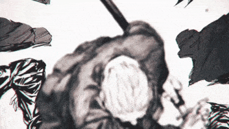

| Descrição Pessoal |
| Idade |
27 |
| Gênero |
Homen |
| Altura |
190 centímetros |
| Peso |
78kg |
| Cor de cabelo |
Preto |
Habilidades
- Nível Geral de Habilidade
- Como membro da Ordem, Takamura é um dos assassinos mais fortes da JAA. Slur , um assassino extremamente habilidoso e poderoso, esperava estar morto quando tentaram assumir o controle da JAA. Mesmo em sua idade avançada, ele possui um incrível poder destrutivo. Como prova de sua força, Slur especulou que Gaku pode ter sido a única pessoa a sobreviver a uma luta com Takamura.
- Velocidade e reflexos aprimorados
- Usando sua katana, Takamura foi rápido o suficiente para parar as balas disparadas contra ele à queima-roupa. Sua velocidade com sua katana é tão imensa que as pessoas mal conseguem registrar seus golpes. Da mesma forma, ele pode sacar e cortar tão rapidamente que parece que sua katana está apenas parcialmente desembainhada
- Força Aprimorada
- Mesmo na velhice, Takamura possui uma força física incrível. Ele foi capaz de bloquear um ataque aéreo de Gaku com uma mão usando sua katana embainhada. Takamura é capaz de balançar sua espada com força suficiente para cortar a base de aço da Torre de Tóquio, dividir uma van e nivelar completamente o andar inteiro de um edifício. As consequências dos ataques de Takamura exigiram extensos reparos no edifício.
- Mestre Espadachim
- Takamura possui habilidades sobre-humanas com uma katana, mesmo quando luta com os olhos fechados. Apesar da katana ter comprimento normal, seus golpes se estendem por um alcance enorme e muitas vezes dizimam completamente tudo ao seu redor. Seus cortes são incrivelmente limpos, como observado por Kashima , seus cortes limpos permitiram que as células musculares do membro decepado de Gaku continuassem vivas. Ele também pode usar sua espada para propósitos mais mundanos, como esfaquear uma porta trancada e pressionar a alça do outro lado com a lâmina.
Voltar
